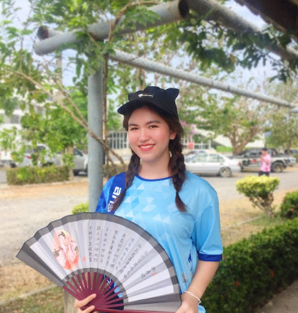
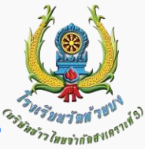

ประวัติส่วนตัว

ชื่อ : นางสาวเกศิณี รัตนปินตา
ชื่อเล่น : แป้ง
เกิด : วันที่ 25 กุมภาพันธ์ 2547
เชื้อชาติ : ไทย
สัญชาติ : ไทย
ศาสนา : พุทธ
ความสามารถพิเศษ : วาดรูป
สถานศึกษาปัจจุบัน : วิทยาลัยเทคนิค สระบุรี
แผนกวิชา : คอมพิวเตอร์ธุรกิจ
สาขา : เทคโนโลยีธุรกิจดิจิทัล
ประวัติการศึกษา

ประถมศีกษา : โรงเรียนวัดห้วยบง สระบุรี
มัธยมศีกษาตอนต้น : โรงเรียน เทพศิรินทร์ พุแค สระบุรี
มัธยมศีกษาตอนปลาย : การศึกษานอกระบบ อำเภอเมืองสระบุรี
บิดา : นาย**** ******
มารดา : นางสาว**** ******
พี่น้อง : มี ** คน